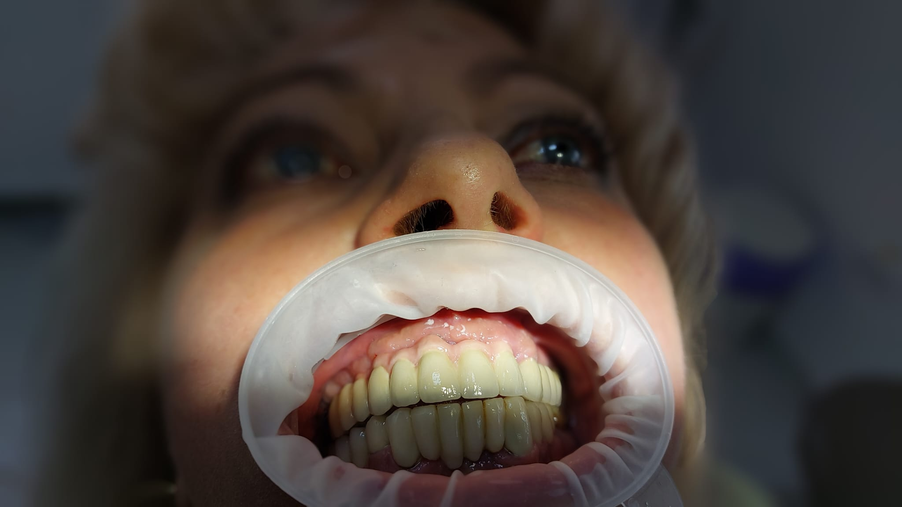

Protetică dentară în Comarnic
Protetica dentară se ocupă de refacerea și înlocuirea dinților deteriorați sau lipsă, restabilind funcționalitatea și estetica zâmbetului. La HopeDent, lucrările protetice sunt realizate cu materiale de calitate superioară și cu atenție la detaliile individuale.
Fiecare caz necesită o consultație amănunțită pentru a stabili soluțiile potrivite pentru refacerea dentară.
Protetica dentară include coroane, punți, proteze și alte lucrări pentru refacerea dinților. Este specialitatea care ajută pacienții să recupereze funcționalitatea și aspectul natural al zâmbetului, folosind materiale durabile și biocompatibile.
La HopeDent, fiecare consultație protetică începe cu o evaluare detaliată și cu explicații clare despre opțiunile disponibile. Pacientul înțelege ce se întâmplă, ce materiale sunt folosite și care sunt rezultatele așteptate.

Servicii de protetică dentară
În cadrul consultațiilor de protetică, medicul evaluează starea dinților și recomandă soluțiile potrivite pentru refacerea dentară, de la coroane simple până la proteze complexe.
Coroane dentare
Refacerea dinților deteriorați cu coroane metalice, ceramice sau zirconiu.
Punți dentare
Înlocuirea dinților lipsă prin punți fixe susținute de dinții adiacenți.
Proteze dentare
Proteze mobile sau fixe pentru înlocuirea mai multor dinți lipsă.
Lucrări provizorii
Proteze temporare pentru perioada de pregătire a lucrărilor definitive.
Refaceri estetice
Îmbunătățirea aspectului zâmbetului prin lucrări protetice estetice.
Îngrijire și întreținere
Recomandări pentru îngrijirea lucrărilor protetice pe termen lung.
Când sunt recomandate lucrările protetice?
Protetica dentară este necesară pentru refacerea dinților deteriorați sau lipsă, restabilind funcționalitatea și aspectul zâmbetului.
Procesul de refacere protetică
La HopeDent, fiecare lucrare protetică este realizată cu precizie, folosind tehnologii moderne și materiale de înaltă calitate pentru rezultate durabile.
Evaluare
Examinarea stării dentare și planificarea lucrării protetice.
Pregătire
Prepararea dinților și luarea amprentelor pentru lucrarea personalizată.
Fabricare
Realizarea lucrării în laborator cu materiale biocompatibile.
Fixare
Aplicarea lucrării definitive și ajustări pentru confort.
Când este nevoie de alte tratamente?
În unele cazuri, protetica poate fi completată cu implantologie, ortodonție sau chirurgie dentară pentru rezultate optime.
Întrebări frecvente
Cât timp durează o lucrare protetică?
Durata variază de la câteva zile pentru coroane până la câteva săptămâni pentru proteze complexe.
Sunt lucrările protetice durabile?
Da, cu îngrijire corespunzătoare, lucrările pot dura mulți ani.
Ce materiale se folosesc?
Utilizăm materiale biocompatibile precum ceramică, zirconiu sau aliaje metalice.
Este dureros procesul?
Anestezia locală asigură confortul, iar disconfortul post-tratament este minim.